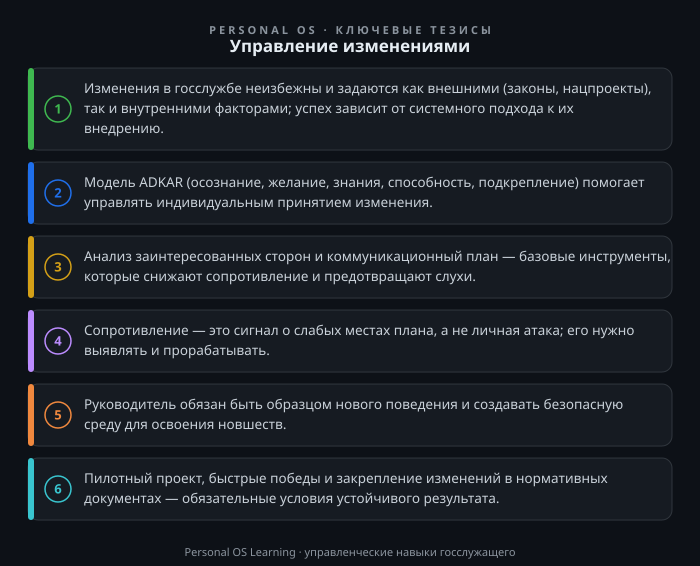

Реформа государственного управления, цифровизация, оптимизация процессов, новые требования законодательства — изменения стали постоянной частью работы каждого госслужащего. Ещё вчера мы оформляли справки в бумажном виде, сегодня — через личный кабинет портала госуслуг. Завтра нас ждут новые регламенты, новые информационные системы, новые форматы взаимодействия с гражданами. Кто-то воспринимает это как стресс и угрозу, кто-то — как возможность. Но одно очевидно: способность эффективно проводить изменения и адаптироваться к ним — это ключевая компетенция современного государственного служащего.
В модели компетенций госслужащих этот навык называется «Гибкость и готовность к изменениям». Он включает не только личную готовность менять привычные способы работы, но и умение управлять изменениями в масштабах своего отдела, департамента или ведомства. Эта статья — практическое руководство: вы узнаете, что такое управление изменениями, какие инструменты помогут внедрить новое без лишних потерь, и как действовать, когда изменения касаются лично вас.
Управление изменениями — это не просто «внедрение новшеств». Это системный подход к переходу из текущего состояния в желаемое, при котором минимизируется сопротивление, риски и потери эффективности. Классическая модель Курта Левина описывает три этапа: «размораживание» (осознание необходимости изменений), «движение» (внедрение нового) и «замораживание» (закрепление результата). Более современная модель ADKAR (канадский консультант Джефф Хайатт) фокусируется на индивидуальном принятии изменения и включает пять элементов:
Для госслужащего эта модель ценна тем, что она напоминает: любое изменение в системе начинается с изменения в сознании конкретных людей. Можно издать приказ, закупить программное обеспечение, изменить регламент — но если сотрудники не понимают, зачем это нужно, не умеют работать по-новому и не получают поддержки, изменение останется формальным.
Например, переход на электронный документооборот часто проваливается не из-за технических проблем, а из-за того, что сотрудники продолжают распечатывать документы «чтобы были подписи», дублируют электронные версии бумажными и тратят вдвое больше времени. Управление изменениями как раз и призвано решить эту человеческую проблему.
Государственная служба работает в особой нормативной среде, и это накладывает отпечаток на управление изменениями. Во-первых, большинство изменений инициируется «сверху» — федеральными законами, указами Президента, постановлениями Правительства, ведомственными приказами. Рядовой сотрудник редко выбирает, внедрять ли новую систему; его задача — качественно её внедрить.
Во-вторых, госсектор ориентирован на соблюдение процедур и стандартов. Это создаёт естественное сопротивление изменениям: проще работать по старинке, чем осваивать новое, особенно когда за ошибку грозит дисциплинарная ответственность. Поэтому важнейшая задача руководителя — создать среду, в которой ошибки при освоении нового не наказываются, а корректируются.
В-третьих, изменения в госсекторе часто связаны с цифровой трансформацией. Например, Федеральный закон «Об организации предоставления государственных и муниципальных услуг» Федеральный закон «Об организации предоставления государственных и муниципальных услуг» задал вектор на электронное взаимодействие граждан с государством. Указ Президента о национальных целях развития Указ Президента РФ «О национальных целях развития Российской Федерации на период до 2030 года» требует достижения «цифровой зрелости» государственного управления. Это означает, что каждому госслужащему придётся осваивать новые информационные системы, пересматривать процессы и учиться работать с данными.
Ещё одна особенность — высокая степень регламентации. Изменения часто оформляются через административные регламенты, должностные инструкции, технические задания. Поэтому важно не только внедрить новое, но и правильно закрепить его в нормативных документах. Без этого изменение останется неформальной практикой и откатится назад при первой же смене руководства.
Рассмотрим несколько практических инструментов, которые можно применить в любом государственном органе — от районной администрации до федерального министерства.
Прежде чем начинать изменение, составьте список всех, кого оно коснётся: руководители, подчинённые, коллеги из смежных отделов, граждане, внешние организации. Для каждого определите два параметра: уровень влияния на изменение и уровень заинтересованности. Постройте матрицу:
Пример: внедрение новой системы электронного делопроизводства. Ключевые игроки — начальник отдела, системный администратор, сотрудники, которые оформляют документы. Наблюдатели — руководители других отделов, которым придётся подписывать документы в новой системе. Отстранённые — сотрудники архива, если они не участвуют в процессе. Работа с каждой группой — разная.
Изменения часто проваливаются из-за недостатка информации. Люди начинают додумывать: «нас сократят», «мы не справимся», «это временно». Коммуникационный план помогает этого избежать. Он должен отвечать на вопросы:
План включает каналы (совещания, электронные письма, информационные стенды, внутренний портал), ответственных, сроки. Важно, чтобы коммуникация была двусторонней: нужно не только информировать, но и собирать вопросы и обратную связь.
Сопротивление — это нормальная реакция на изменение. Оно может проявляться явно (критика, саботаж) или скрыто (пассивное игнорирование, формальное выполнение). Алгоритм работы с сопротивлением:
Важно помнить: сопротивление — это не личная война против вас. Это сигнал о том, что в плане изменения есть слабые места, которые нужно доработать.
Вместо того чтобы внедрять изменение сразу во всём органе, выберите один отдел или одно направление. Проведите пилот, соберите данные о проблемах, доработайте процесс и только потом масштабируйте. Это снижает риски и позволяет создать историю успеха, на которую можно ссылаться при работе с остальными сотрудниками.
Компетенция «Гибкость и готовность к изменениям» предъявляет требования к каждому госслужащему. Для руководителя это означает:
Для рядового сотрудника гибкость проявляется в готовности переучиваться, задавать вопросы, предлагать улучшения. Если изменение кажется нелогичным, не стоит молча саботировать — лучше конструктивно высказать свои опасения и предложить альтернативу. Инициатива ценится, особенно если она подкреплена пониманием целей изменения.
Ключевой момент — переход от позиции «жертвы обстоятельств» к позиции «автора своей деятельности». Вместо «меня заставляют работать в новой системе» — «я осваиваю новую систему, чтобы быстрее обслуживать граждан». Это меняет мотивацию и снижает стресс.
Опыт показывает, что чаще всего изменения в государственных органах буксуют из-за следующих ошибок:
Предлагаю вам выполнить несколько упражнений, которые помогут применить полученные знания к вашей реальной ситуации. Каждое задание займёт 15–30 минут.
Выберите изменение, которое сейчас происходит или планируется в вашем органе (например, внедрение новой информационной системы, переход на электронный документооборот, изменение административного регламента). На листе бумаги или в таблице нарисуйте матрицу 2×2 (ось X — заинтересованность, ось Y — влияние). Разместите на ней всех, кого это изменение касается: руководителей, коллег, подчинённых, сотрудников смежных отделов, внешних участников. Для каждой группы напишите, какие действия вы предпримете: личная встреча, информационное письмо, обучение, привлечение к рабочей группе. Это станет основой вашего плана работы с людьми.
Возьмите то же изменение и составьте план коммуникаций на первые две недели после официального объявления. Ответьте на вопросы:
Вспомните недавнее изменение в вашей работе (например, переход на новый программный продукт). Оцените себя по пяти элементам ADKAR по шкале от 1 до 5:
Если какой-то элемент ниже 3 — это зона роста. Определите, что конкретно вы можете сделать, чтобы повысить этот балл: задать вопрос руководителю, записаться на обучение, попросить наставника, попросить обратную связь.
Выберите любое изменение, которое уже завершилось в вашем органе (или в стране в целом). Проведите «разбор полётов» по вопросам:
Выполнив это задание, вы сформируете собственный опыт анализа изменений, который пригодится в будущем.
Управление изменениями — это не сверхспособность, а системный навык, который можно и нужно тренировать. Для госслужащего это одновременно и профессиональный инструмент, и личная компетенция. Умение объяснить людям смысл нового, поддержать их в переходный период, закрепить результат — то, что отличает эффективного руководителя и востребованного сотрудника. А личная гибкость — готовность учиться, менять привычки и видеть возможности вместо угроз — становится главным конкурентным преимуществом в эпоху постоянных реформ.
Начните с малого: примените описанные инструменты к ближайшему изменению в вашем отделе. Вы увидите, как меняется реакция людей, когда вместо приказа появляется понятный план, а вместо контроля — поддержка. Это и есть управление изменениями.

Открыть инфографику в полном размере ↗